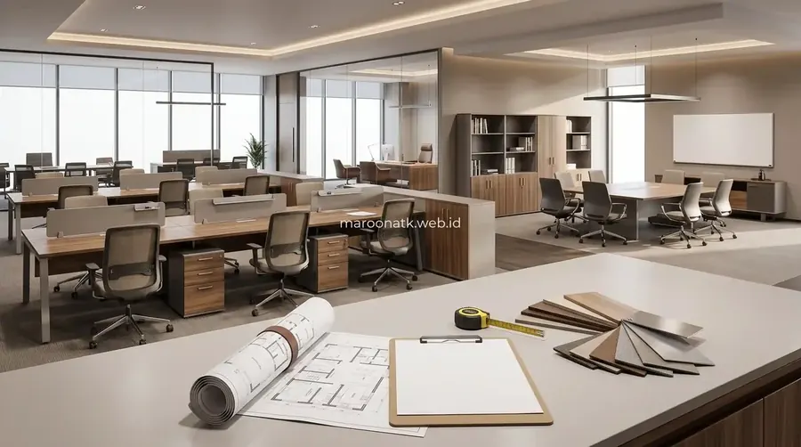
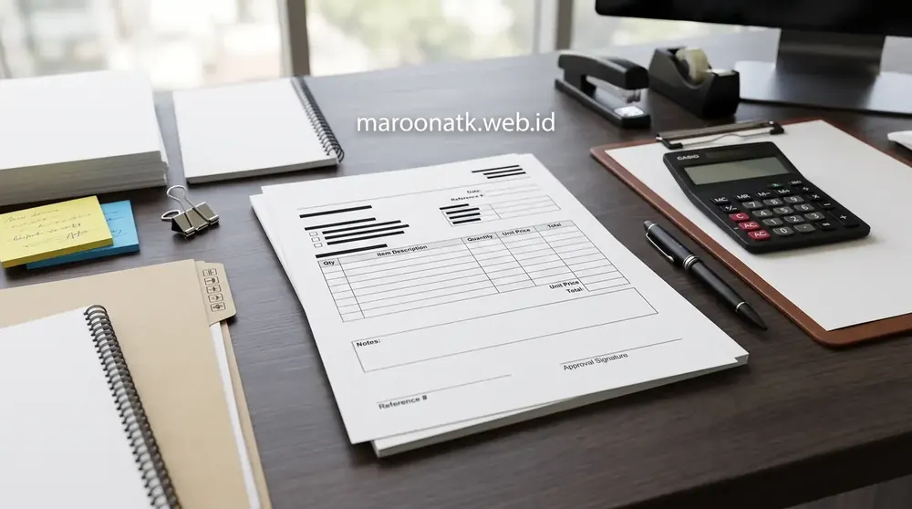

Pentingnya Menerapkan SOP Pengadaan Furniture Kantor Skala Korporat
SOP pengadaan furniture kantor B2B adalah rangkaian prosedur terstandarisasi yang mengatur 14 tahapan procurement mulai dari audit kebutuhan ruang, perumusan TOR teknis material, evaluasi vendor berbadan hukum PT, inspeksi Quality Control (QC) bertingkat, hingga penerbitan Berita Acara Serah Terima (BAST) dan e-Faktur PPN 11%. Prosedur ini dirancang untuk menjamin ketahanan masa pakai produk 3–10 tahun serta mencegah risiko inefisiensi belanja modal (CapEx).
Pengadaan sarana kerja seperti meja modular, kursi kerja ergonomis, dan lemari arsip baja bukan sekadar transaksi jual-beli biasa. Bagi purchasing team korporat dan instansi pemerintah, pengadaan furniture kantor melibatkan investasi modal (Capital Expenditure) dalam nominal signifikan yang berdampak langsung terhadap kenyamanan, kesehatan ergonomi karyawan, estetika interior, serta produktivitas kerja jangka panjang.
Tanpa Standard Operating Procedure (SOP) yang terstruktur, proses pengadaan rentan mengalami kendala: keterlambatan jadwal delivery proyek, furniture cacat saat perakitan, ketidaksesuaian dimensi dengan denah lantai (layout plan), hingga vendor non-resmi yang lepas tangan ketika terjadi kerusakan komponen hidrolik. Oleh sebab itu, pemahaman mendalam tentang standar operasional dan profil Tentang Maroon ATK sebagai mitra pengadaan berbadan hukum PT resmi menjadi landasan krusial bagi purchasing officer profesional.

Panduan Memilih Supplier ATK Jakarta Terpercaya
Tinjauan kriteria legalitas perusahaan, kemampuan pasok B2B, dan transparansi invoice dalam memilih mitra pengadaan terpercaya.
Matriks 14 Tahapan SOP Pengadaan Furniture Kantor B2B
Berikut adalah tabel matriks Standard Operating Procedure (SOP) menyeluruh yang mencakup aktivitas, output dokumen, penanggung jawab (PIC), titik kontrol mutu, dan analisis risiko operasional:
| Tahapan Pengadaan | Aktivitas Utama | Dokumen Output | PIC | Titik QC / Kontrol | Risiko Jika Diabaikan |
|---|---|---|---|---|---|
| 1. Identifikasi Kebutuhan | Audit jumlah staf, fungsi ruang kerja, layout denah lantai | Formulir Permintaan Pengadaan (PR) | User / General Affairs | Verifikasi jumlah staf riil vs kapasitas ruang | Pembelian berlebih atau ruang kerja menjadi sempit |
| 2. Penyusunan Spesifikasi | Menentukan material (MFC E1, plat baja), dimensi, ergonomi | Lembar Spesifikasi Teknis (TOR) | Purchasing / Tim Teknis | Standar kekuatan material & ketebalan plat | Mendapatkan furniture kualitas rendah/mudah patah |
| 3. Penyusunan TOR / RAB | Membuat estimasi plafon anggaran harga wajar pasar | Rencana Anggaran Biaya (RAB) | Purchasing & Finance | Cek kesesuaian anggaran CapEx perusahaan | Proposal ditolak direksi karena melebihi plafon |
| 4. Permintaan Quotation | Kirim RFQ ke minimal 3 vendor B2B terdaftar resmi | Surat Penawaran Harga (SPH) Vendor | Purchasing Officer | Kelengkapan spesifikasi SPH vs TOR | Perbandingan harga tidak apple-to-apple |
| 5. Seleksi & Evaluasi Vendor | Cek legalitas PT, NPWP, track record, unit sampel demo | Lembar Evaluasi Vendor (Scoring Sheet) | Komite Pengadaan / Purchasing | Pemeriksaan fisik sampel & legalitas pajak | Tertipu vendor perantara/fiktif tanpa garansi |
| 6. Negosiasi | Negosiasi harga satuan, diskon volume, termin pembayaran | Berita Acara Negosiasi (BAN) | Procurement Manager | Klausul garansi & biaya kirim/rakit include | Timbul biaya tersembunyi untuk perakitan/handling |
| 7. Purchase Order (PO) | Penerbitan PO resmi berkop perusahaan dengan klausul TOR | Official Purchase Order (PO) | Purchasing & Direktur Otoritas | Kesesuaian item, total nominal, & PPN 11% | Sengketa hukum jika terjadi wanprestasi pengiriman |
| 8. Produksi / Persiapan Barang | Monitoring timeline fabrikasi/ready stock gudang vendor | Laporan Progres Fabrikasi Vendor | Vendor & Purchasing Staff | Kesesuaian warna finishing & bahan baku | Keterlambatan serah terima proyek kantor baru |
| 9. Quality Control (QC) Pra-Kirim | Inspeksi fisik kelengkapan komponen di gudang vendor | Lembar Checklist QC Gudang | Tim QC Vendor / Tim Verifikasi | Bebas goresan, cacat sudut, & kelengkapan baut | Barang ditolak saat tiba di kantor klien |
| 10. Pengiriman (Delivery) | Ekspedisi aman dengan armada khusus dan wrapping tebal | Surat Jalan Resmi Pengiriman | Tim Logistik Vendor & GA | Kondisi kemasan utuh bebas benturan | Kerusakan barang penyok atau kaca lemari pecah |
| 11. Penerimaan Barang di Lokasi | Pengecekan jumlah koli fisik di area loading dock kantor | Tanda Terima Surat Jalan Sementara | Staf GA / Security / Gudang | Pencocokan kuantitas koli vs Surat Jalan | Item komponen hilang saat proses bongkar muat |
| 12. Instalasi & Perakitan | Perakitan meja, partisi, lemari arsip sesuai denah layout | Checklist Hasil Perakitan Teknisi | Tim Teknisi Vendor & Pengawas GA | Kekokohan struktur, kelurusan, fungsi rel/kunci | Meja goyang atau pintu lemari macet tidak presisi |
| 13. Serah Terima (BAST) | Uji fungsi menyeluruh dan penandatanganan serah terima | Berita Acara Serah Terima (BAST) | User, Purchasing, & Vendor | Seluruh item berfungsi normal 100% tanpa cacat | Klaim garansi sulit diproses karena tanpa BAST |
| 14. Dokumentasi & Evaluasi | Pengarsipan e-Faktur PPN, invoice, sertifikat garansi | Laporan Penutupan Proyek Procurement | Purchasing & Finance | Verifikasi e-Faktur pada portal DJP | Temuan audit pajak dan hilangnya hak klaim garansi |

Pemeriksaan Quality Control (QC) presisi pada setiap engsel, rel laci lemari arsip, dan kestabilan kaki meja kerja dilakukan untuk menjamin standar keselamatan dan kekuatan konstruksi.

Mengenal Keuntungan Sistem Paket Pengadaan Alat Tulis Kantor B2B
Ketahui manfaat konsolidasi logistik perkantoran untuk menciptakan transparansi pembukuan dan memangkas waktu kerja staf.
Panduan Penyusunan Spesifikasi Teknis Furniture yang Tepat
Kesalahan terbesar dalam penyusunan Term of Reference (TOR) adalah deskripsi produk yang terlalu umum. Agar mendapatkan produk yang tahan lama, purchasing team wajib menetapkan parameter teknis berikut:
1. Meja Kerja Staf dan Executive (MFC vs Solid Wood)
Pilihlah papan meja dengan material Melamine Faced Chipboard (MFC) atau MDF grade E1 ramah lingkungan dengan ketebalan minimal 25mm. Lapisan permukaan wajib dilapisi High Pressure Laminate (HPL) atau melamin anti gores dan anti air, dengan edging PVC 2mm berteknologi hot-melt. Rangka kaki baja hollow wajib melalui proses powder coating tahan karat.
2. Kursi Kerja Ergonomis (Standar BIFMA & Gaslift Class 3/4)
Kursi staf wajib memiliki mekanisme tilting pengatur kemiringan sandaran, penopang pinggang (lumbar support) yang dapat disetel, serta busa dudukan cetak (high density molded foam) yang tidak mudah kempes. Pastikan silinder hidrolik memiliki sertifikasi Gaslift Class 3 atau Class 4 berstandar internasional ANSI/BIFMA.
3. Lemari Arsip dan Filing Cabinet (Plat Baja Cold Rolled)
Untuk lemari arsip dokumen rahasia dan binder akuntansi, tentukan ketebalan plat baja minimal 0,7mm hingga 1,0mm sebelum pengecatan. Pastikan sistem penguncian menggunakan central lock dengan anak kunci cadangan, serta rel laci bersistem full extension ball bearing berdaya beban minimal 30 kg per laci.

Contoh Format Proposal Pengajuan Pengadaan ATK & Inventaris Kantor
Template lengkap penyusunan proposal pengadaan resmi untuk diajukan ke jajaran direksi dan manajemen keuangan.
Checklist Evaluasi Vendor Furniture Sebelum Menerbitkan PO
Gunakan checklist verifikasi purchasing berikut sebelum memutuskan kontrak pengadaan furniture dengan supplier:
- Legalitas Usaha: Vendor berbadan hukum resmi (PT) dengan NIB (Nomor Induk Berusaha), NPWP perusahaan, dan terdaftar sebagai Pengusaha Kena Pajak (PKP).
- Kepatuhan Perpajakan: Kemampuan menerbitkan e-Faktur PPN 11% yang sah dan dapat diverifikasi langsung di server Direktorat Jenderal Pajak (DJP).
- Layanan Perakitan Internal: Memiliki tim instalatur internal, bukan pihak ketiga lepas, guna memastikan tanggung jawab perakitan di lokasi.
- Garansi Komponen: Memberikan garansi resmi tertulis minimal 1 hingga 3 tahun untuk mekanisme hidrolik kursi, engsel lemari, dan struktur rangka meja.
- Ketersediaan Sampel Fisik: Menyediakan unit sampel atau mock-up fisik untuk diuji coba langsung oleh tim user sebelum produksi massal.
Rencanakan Pengadaan Furniture Kantor Anda Bersama Maroon ATK
Layanan Mock-Up, Layout 3D, dan SPH Resmi
Konsultasikan kebutuhan furniture kantor Anda bersama tim konsultan B2B Maroon ATK. Dapatkan proposal penawaran harga terbaik, garansi resmi, dan instalasi profesional di lokasi.
Kesimpulan: Eksekusi Pengadaan Furniture Kantor yang Akuntabel dan Bebas Risiko
Rangkuman Keputusan Procurement
Menerapkan SOP pengadaan furniture kantor secara disiplin memastikan investasi aset perusahaan terlindungi dengan performa produk yang awet, aman, dan berdaya guna tinggi.
- Disiplin 14 Tahapan: Jalankan alur secara teratur mulai dari formulasi TOR spesifikasi teknis hingga verifikasi akhir dokumen BAST.
- Audit Mutu Ketat: Lakukan inspeksi detail pada material plat baja, hidrolik BIFMA, dan kerapian finishing sebelum serah terima.
- Mitra B2B Terpercaya: Percayakan pengadaan sarana kantor Anda kepada Maroon ATK yang menjamin legalitas PT resmi, penerbitan e-Faktur PPN 11%, dan tim teknisi berpengalaman.
Pertanyaan Umum (FAQ) SOP Pengadaan Furniture Kantor
SOP pengadaan furniture kantor memastikan spesifikasi teknis (material plat baja, ketebalan MFC, standar ergonomi BIFMA) terpenuhi secara konsisten, mencegah pembengkakan biaya, memitigasi risiko cacat barang saat pengiriman, serta memastikan ketersediaan garansi resmi dan Berita Acara Serah Terima (BAST) yang akuntabel.
Titik kritis QC mencakup pemeriksaan kesesuaian dimensi layout, ketahanan engsel dan rel laci, kerataan permukaan meja, kerapian lapisan powder coating/edging, stabilitas hidrolik kursi kerja, serta fungsi kunci sentral pengaman pada filing cabinet sebelum penandatanganan dokumen BAST.
Ya, Maroon ATK memiliki tim teknisi instalasi internal yang menangani proses pengiriman, unloading aman, perakitan meja kerja modular, lemari arsip baja, serta penataan furniture sesuai denah layout kantor klien, lengkap dengan penerbitan e-Faktur PPN 11% dan BAST resmi.

Arby Ardiansyah
Praktisi pengadaan B2B berpengalaman lebih dari 5 tahun dalam manajemen rantai pasok sarana kantor, optimasi biaya ATK korporat, dan e-procurement instansi pemerintah dan swasta di Indonesia.